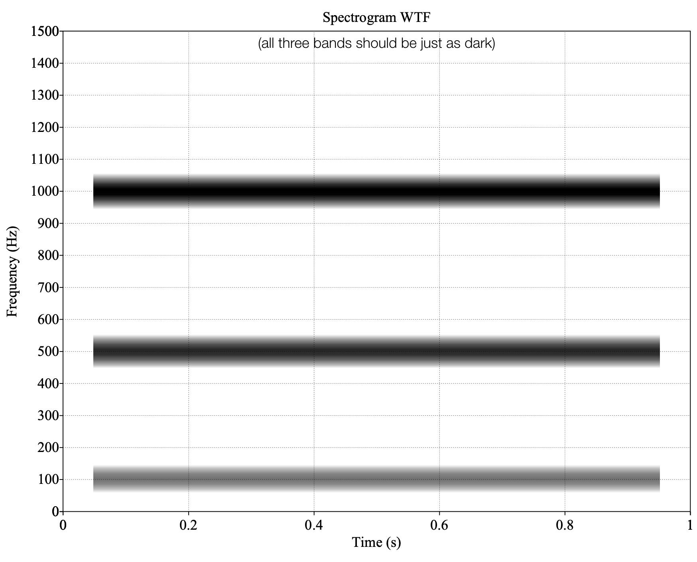

# Complex Waves and Phase ### Will Styler - LIGN 113 --- ### Today's Plan - What are complex sounds? - What is interference? - What is 'phase'? - How do we visualize and analyze complex sounds? --- ### Last time, we talked about basic properties of sound - Amplitude, Duration, Period, Frequency and Wavelength - ... and we ended with a sound that's... not quite like the others --- <img class="r-stretch" src="phonmedia/100+200.jpg"> --- ### We've been looking at sine waves - Sounds which have just one *frequency component* - These are relatively rare in nature! - It's positively sineful that we've focused there - Most actual sources of sound generate multiple frequencies naturally --- ### ... and our ears (almost) never just hear one frequency - Because we're surrounded by noise! - Noise arriving at the ear is additive - We only hear one waveform per ear, no matter the source(s) --- ### So, we should probably talk about... --- ## Complex Sounds --- ### Complex Sounds - Sounds which are made up of more than one *component frequency* - Also, *aperiodic* sounds, which aren't naturally derived from specific frequencies --- ### We're going to work with simplified complex sounds today - But the world is full of more complex complexity <img class="r-stretch" src="phonmedia/noisewaveform.jpg"> --- ### How do we create complex sounds? - By making multiple sounds at the same time! - Or, mathematically, using addition! --- <img class="r-stretch" src="phonmedia/soundw.jpg"> <audio controls src="phonmedia/soundw.wav"></audio> --- <img class="r-stretch" src="phonmedia/soundt.jpg"> <audio controls src="phonmedia/soundt.wav"></audio> --- <img class="r-stretch" src="phonmedia/soundf.jpg"> <audio controls src="phonmedia/soundf.wav"></audio> --- <img class="r-stretch" src="phonmedia/soundwtf.jpg"> <audio controls src="phonmedia/soundwtf.wav"></audio> --- ### Let's look at this process in a bit more detail! <img class="r-stretch" src="diagrams/phase_2x_separate.jpg"> --- <img class="r-stretch" src="diagrams/phase_3x_90_separate.jpg"> --- ### You can add very different frequencies! <img class="r-stretch" src="diagrams/phase_12x_separate.jpg"> --- ### Why would sounds be combined together using addition? <img class="r-stretch" src="diagrams/phase_12x_separate.jpg"> --- ### The sum of two waves is the sum of their pressures at any given point - Which gives rise to... --- ## Interference --- ### Interference - Multiple signals are 'interfering' with one another when they collide and affect one another - *Affect* means just that! Any effect at all! - There are two main kinds of interference in audio - Constructive Interference - Destructive Interference --- ### Constructive Interference - When multiple waves combine in such a way that they become **stronger** - When peaks add together with peaks --- ### Destructive Interference - When multiple waves combine in such a way that they become **weaker** - When peaks add together with valleys --- ### Constructive Interference <img class="r-stretch" src="diagrams/phase_ampbase_separate.jpg"> --- ### Destructive Interference <img class="r-stretch" src="diagrams/phase_combined_separate.jpg"> --- ### ... but wait - Those sounds had the same frequency - The same amplitude - ... and the same duration - One pair combined constructively, and the other pair destructively - ### What's the difference? --- ## Phase --- ### Phase - The point of the cycle in which a sound 'starts' - The 'orientation' of the wave in time - We measure phase in Degrees (°) - 0° is the base, and is the same as 360° - 180° is the exact opposite phase from 0° --- <img class="r-stretch" src="diagrams/phase_phases_separate.jpg"> --- ### Phase is important for adding sounds together! - Sounds that are 'in phase' experience constructive interference - Sounds that are 'out of phase' experience destructive interference - Also called 'phase cancellation' here --- ### Constructive Interference <img class="r-stretch" src="diagrams/phase_ampbase_separate.jpg"> --- ### Destructive Interference/Phase Cancellation <img class="r-stretch" src="diagrams/phase_combined_separate.jpg"> --- ### Complete cancellation is relatively rare! <img class="r-stretch" src="diagrams/phase_amplified_separate.jpg"> --- ### Phase effects aren't all-or-nothing <img class="r-stretch" src="diagrams/phase_offbad_separate.jpg"> --- <img class="r-stretch" src="diagrams/phase_off_separate.jpg"> --- ### Aside: Applied Phase Cancellation <img class="r-stretch" src="img/noise_cancelling_headphones.jpg"> --- <img class="r-stretch" src="hearing/muffler.jpg"> --- ### Humans can't detect phase - It doesn't matter what phase a sound starts on to us - But it's crucial when making complex sounds! --- ### Subtle Phase differences matter! --- <img class="r-stretch" src="diagrams/phase_3x_90_separate.jpg"> --- <img class="r-stretch" src="diagrams/phase_3x_separate.jpg"> --- # Complex Sounds are everywhere! --- <img class="r-stretch" src="phonmedia/noisewaveform.jpg"> --- ### How do we understand their components? - Using spectra or spectrograms - Using a **Fourier Transform** lets us understand the component frequencies and their phases - 'This signal is made up of which component signals?' --- **If you haven't heard about spectrograms and spectra before, watch [this video starting at 12:30](https://www.youtube.com/watch?v=59NqlXr59_c)** <https://www.youtube.com/watch?v=59NqlXr59_c> This goes into a bit more detail (and allows me to be kind to the folks who've had 110 and/or 112) --- ### Here's a nice video on Fourier Transforms <https://www.youtube.com/watch?v=spUNpyF58BY> "But what is the Fourier Transform? A visual introduction" by 3Blue1Brown --- ### We've been looking at waveforms! <img class="r-stretch" src="phonmedia/sound_diagram.jpg"> - They show the combined, complex signal! --- <img class="r-stretch" src="phonmedia/soundw.jpg"> <audio controls src="phonmedia/soundw.wav"></audio> --- <img class="r-stretch" src="phonmedia/soundt.jpg"> <audio controls src="phonmedia/soundt.wav"></audio> --- <img class="r-stretch" src="phonmedia/soundf.jpg"> <audio controls src="phonmedia/soundf.wav"></audio> --- <img class="r-stretch" src="phonmedia/soundwtf.jpg"> <audio controls src="phonmedia/soundwtf.wav"></audio> --- ### Spectra show frequencies and their powers - Also known as 'FFTs' or 'Spectral Slices' --- <img class="r-stretch" src="phonmedia/soundwtf.jpg"> --- <img class="r-stretch" src="phonmedia/soundwtf_spectrum.jpg"> --- ### FFTs give us the component frequencies - ... and their power - Phase is also recoverable using FFTs - ... but we want time! --- ### Spectrograms show frequency and power over time! <img class="r-stretch" src="phonmedia/soundwtf.jpg"> ---  --- ### Fourier analysis works for any complex sound! <img class="r-stretch" src="phonmedia/complexwave1.jpg"> --- --- --- <img src="phonmedia/complexwaves.jpg"> --- ### Our cochleas are doing something like fourier analysis! --- <img class="r-stretch" src="hearing/basilar_frequencies.jpg"> --- <img class="r-stretch" src="phonmedia/noisewaveform.jpg"> --- <img class="r-stretch" src="phonmedia/noisefft.jpg"> --- ### Today we've learned about Complex Waves - About Phase - Phase Cancellation - ... and visualizing complex waves --- ### For Next Time - We will let the power flow through us, and talk about amplitude! --- <huge>Thank you!</huge>